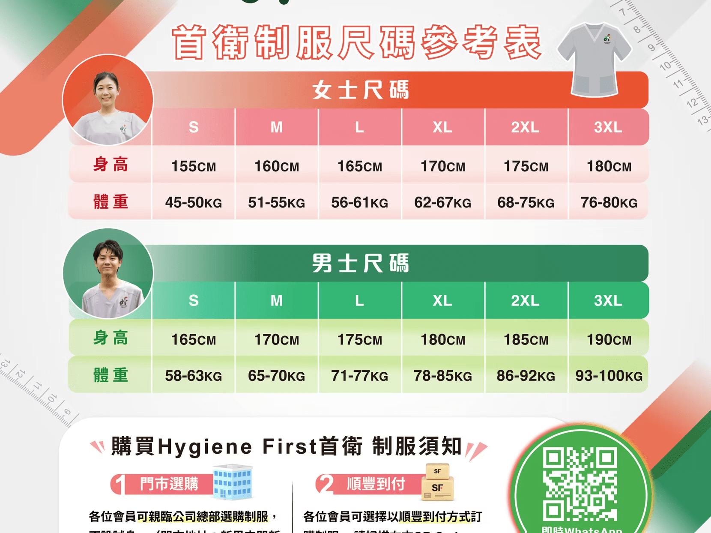

專業護理培訓認證計劃

Hygiene First 首衛很榮幸宣布推出專業護理培訓認證計劃！這項計劃旨在為護理人員提供系統性的專業培訓，提升護理服務品質和專業水平。
培訓計劃內容：
- 基礎護理技能培訓
- 專業醫療知識更新
- 緊急情況處理訓練
- 溝通技巧提升
- 職業道德教育
- 持續進修課程
完成培訓的護理人員將獲得專業認證，並有機會參與進階培訓課程。我們相信，持續的專業發展是提供優質護理服務的關鍵。

Hygiene First 首衛很榮幸宣布推出專業護理培訓認證計劃！這項計劃旨在為護理人員提供系統性的專業培訓，提升護理服務品質和專業水平。
培訓計劃內容：
完成培訓的護理人員將獲得專業認證，並有機會參與進階培訓課程。我們相信，持續的專業發展是提供優質護理服務的關鍵。